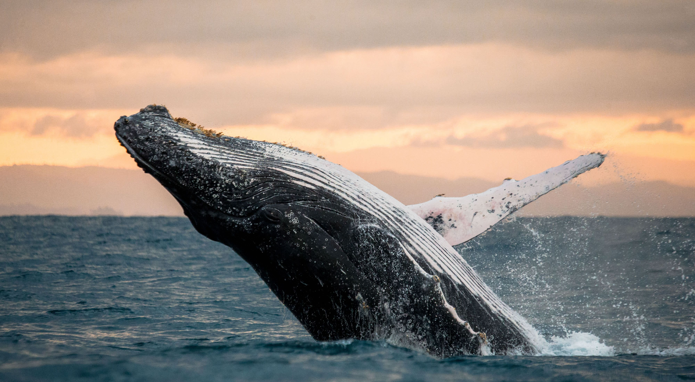
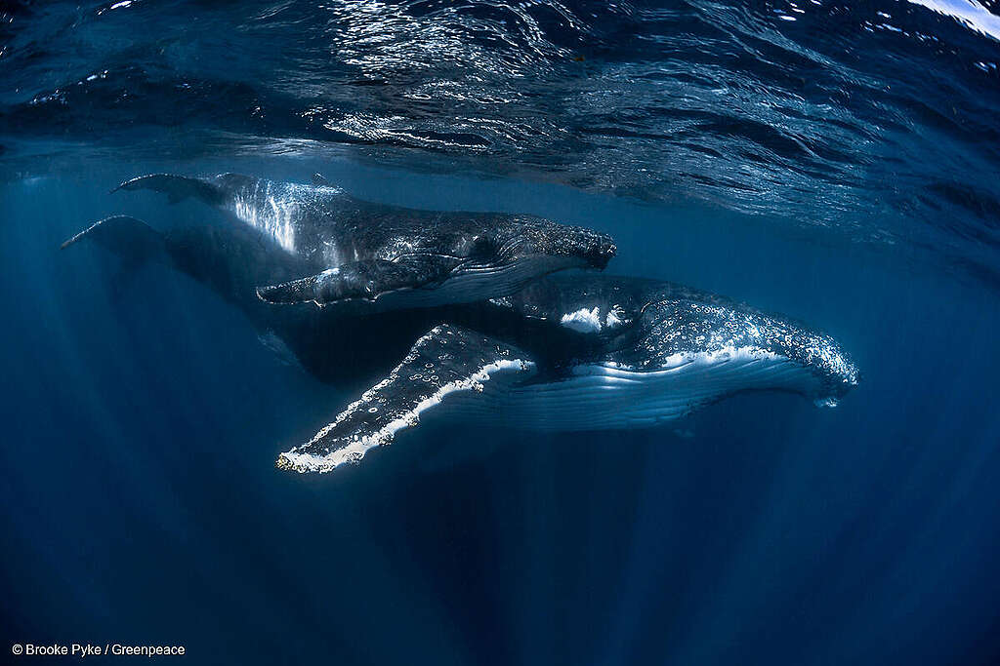

Estas están clasificados en tan solo cuatro especies divididas en dos géneros, Balaena y Eubalaena. Estos
animales pueden llegar a medir entre 25 y 32 metros y los ejemplares más grandes pueden llegar a pesar hasta 180
toneladas. De hecho, una de estas especies de balaenidos, la ballena azul, es el animal más grande del mundo en
la actualidad.

Estos mamíferos, a diferencia de los peces, tienen la cola dispuesta en horizontal, lo que les facilita la
ascensión a la superficie, donde deben subir para respirar. Pueden permanecer bajo el agua aproximadamente una
 hora. Con grandes requerimientos energéticos, las ballenas se alimentan generalmente de pequeños crustáceos y de
krill, que obtienen por la filtración del agua del mar a través de sus barbas. Habitan en todos los océanos en
los que se desplazan en largos viajes migraciones desde los mares fríos, donde se alimentan, a los más cálidos,
donde se aparean y reproducen. Después de una gestación de casi doce meses, dan a luz a una sola cría, cuya
esperanza de vida está en torno a los 30 años.
Existen dos tipos principales de ballenas: las dentadas (como el cachalote y la orca) y las barbadas (como la
ballena jorobada y la azul). Las barbadas tienen placas en forma de peines que están formadas por estructuras
compuestas de pelos rígidos. Estos forman una red que filtra la comida del agua del mar. La gran mayoría de las
grandes ballenas son barbadas y se alimentan fundamentalmente de minúsculas criaturas llamadas krill, parecidas
a los camarones.
hora. Con grandes requerimientos energéticos, las ballenas se alimentan generalmente de pequeños crustáceos y de
krill, que obtienen por la filtración del agua del mar a través de sus barbas. Habitan en todos los océanos en
los que se desplazan en largos viajes migraciones desde los mares fríos, donde se alimentan, a los más cálidos,
donde se aparean y reproducen. Después de una gestación de casi doce meses, dan a luz a una sola cría, cuya
esperanza de vida está en torno a los 30 años.
Existen dos tipos principales de ballenas: las dentadas (como el cachalote y la orca) y las barbadas (como la
ballena jorobada y la azul). Las barbadas tienen placas en forma de peines que están formadas por estructuras
compuestas de pelos rígidos. Estos forman una red que filtra la comida del agua del mar. La gran mayoría de las
grandes ballenas son barbadas y se alimentan fundamentalmente de minúsculas criaturas llamadas krill, parecidas
a los camarones.
Existen dos tipos principales de ballenas: las dentadas (como el cachalote y la orca) y las barbadas (como la
ballena jorobada y la azul). Las barbadas tienen placas en forma de peines que están formadas por estructuras
compuestas de pelos rígidos. Estos forman una red que filtra la comida del agua del mar. La gran mayoría de las

grandes ballenas son barbadas y se alimentan fundamentalmente de minúsculas criaturas llamadas krill, parecidas
a los camarones.
Una ballena jorobada (Megaptera novaeangliae) Madre y cría nadan cerca de Ningaloo Reef, Australia. La costa de
Australia Occidental es una ruta de migración para la población de ballenas jorobadas de Australia Occidental.
Las ballenas jorobadas emprenden una migración anual constante desde las zonas de alimentación antárticas de
latitudes altas a las zonas de reproducción de latitudes bajas.